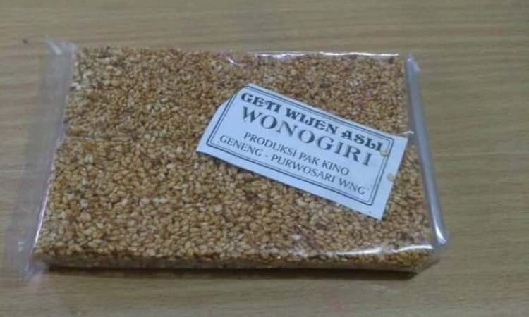
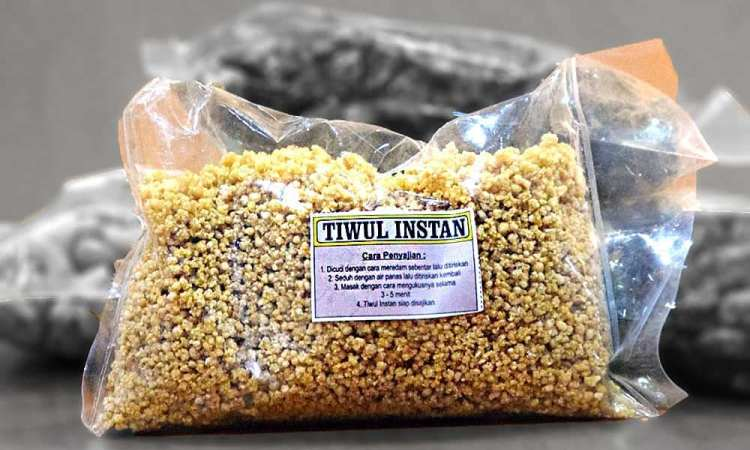
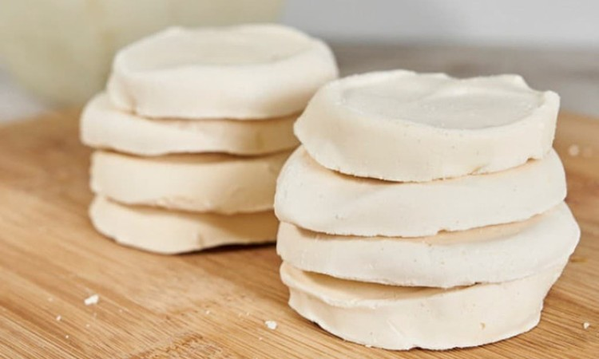
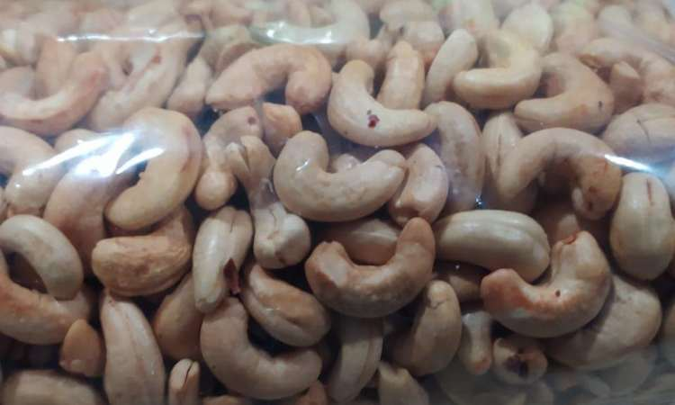
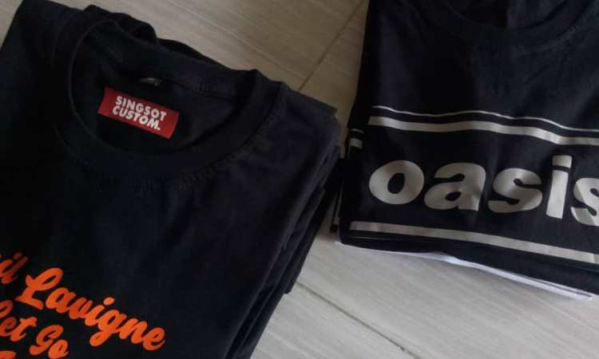

Oleh-Oleh khas Wonogiri
- Sambal Cabuk Wijen
- Geti Biji Wijen
- Tiwul Wonogiri
- Brem Wonogiri
- Wader Goreng Wonogiri
- Kacang Mede Khas Wonogiri
- Emping Melinjo
- Roti Gaplek
- Kaos Singsot
- Aneka Souvenir Wonogiri

Ketika mendengar nama sambal mungkin yang terlintas di pikiran Anda ialah tampilan cabai yang dipadukan dengan bumbu rempah lainnya. Namun hal demikian berbeda dengan Sambal Cabuk Wijen khas Wonogiri ini. Secara visual, penganan ini tampak seperti Pepes yang dibungkus dengan daun pisang. Di atasnya terdapat sisa proses pembakaran daun.
Untuk cita rasa Sambal Cabuk Wijen sendiri sangatlah unik. Rasanya cenderung pedas, legit, dan warnanya sedikit gelap dari sambal biasanya. Jika dihidangkan dengan sepiring nasi hangat, Sambal Cabuk Wijen ini akan terasa begitu nagih dan nikmat. Tak heran ada banyak sekali wisatawan yang memburu penganan ini untuk dijadikan sebagai oleh oleh.
Sesuai namanya, kuliner yang satu ini terbuat dari ampas pengolahan minyak wijen. Ampas minyak wijen tersebut kemudian dicampur dengan sekam atau kulit padi yang sudah dibakar sebelumnya. Lalu, campuran tersebut akan dibumbui dan dibungkus dengan daun pisang. Untuk Sambal Cabuk Wijen ini dibanderol sekitar Rp 5 ribuan saja.

Bagi Anda pencinta makanan manis yang berbahan dasar wijen, penganan khas Wonogiri bisa dimasukkan ke dalam list oleh oleh. Pada dasarnya, camilan ini dibuat dengan mencampurkan biji wijen, gula Jawa, dan jahe. Perpaduan antara bahan tersebut merupakan kombinasi sempurna jika dinikmati ketika musim hujan menerpa. Rasanya yang gurih dan sedikit pedas, membuat penganan yang satu ini banyak diburu oleh wisatawan lokal maupun luar daerah. Bagi Anda yang tertarik untuk mencicipi atau membawa pulang Geti Biji Wijen, hanya perlu mengeluarkan budget sekitar Rp 5 ribuan per bungkusnya. Tak perlu takut basi, jajanan yang satu ini dapat bertahan selama 1 bulan.

Bagi Anda penikmat jajanan tempo dulu, tentu tidak asing ketika mendengar nama Tiwul bukan? Penganan satu ini bisa pula Anda temukan di Wonogiri yang memiliki rasa lebih khas dari Tiwul pada umumnya. Seperti yang Anda tahu, Tiwul merupakan makanan yang terbuat dari singkong yang dikeringkan dan ditumbuk halus hingga berbentuk seperti nasi. Kemudian, Tiwul akan ditambahi dengan irisan gula Jawa dan parutan kelapa yang begitu nikmat. Kuliner khas Wonogiri ini bisa dijadikan sebagai oleh oleh karena dapat bertahan dalam waktu yang lama. Dengan demikian, Anda tidak perlu khawatir jika oleh oleh yang dibawa basi. Harganya pun sangat terjangkau yakni sekitar Rp. 5 ribu per bungkusnya.

eruntuk Anda yang gemar mengonsumsi jajanan Brem, ada baiknya untuk mencicipi Brem khas Wonogiri. Terdapat perbedaan besar antara Brem Wonogiri dengan Brem pada umumnya. Jika biasanya Brem berbentuk kotak dan rasanya sedikit masam, Brem Wonogiri berbentuk bulat dan rasanya lebih manis. Begitu masuk ke dalam mulut, Brem akan langsung meleleh. Jika berbicara mengenai jajanan Brem, penganan yang satu ini sebenarnya bisa ditemui di berbagai daerah Indonesia. Tetapi, selagi menginjakkan kaki di tanah Wonogiri sayang rasanya jika belum mencicipi Brem khas daerah tersebut. Anda juga bisa menjadikan makanan yang satu ini sebagai oleh oleh khas Wonogiri yang paling nikmat.

Pertama kalinya, Wader goreng dijadikan sebagai oleh oleh pada tahun 1982. Kala itu, Wader hanya dapat ditemukan di daerah sekitar Waduk Gajah Mungkur, Wonogiri. Seiring dengan berjalannya waktu, ikan tersebut kemudian dijadikan sebagai oleh oleh khas Wonogiri. Sesuai dengan namanya, penganan ini terbuat dari Ikan Wader yang dibumbui dan diberi tepung yang kemudian di goreng garing. Kuliner olahan ikan ini sangat nikmat jika disantap langsung ataupun disajikan bersama nasi hangat. Teruntuk Anda yang ingin mencoba Wader goreng ini, bisa mendapatkannya di toko oleh oleh yang dibanderol sekitar Rp 7 ribu – Rp 10 ribuan saja.

Mede merupakan salah satu jenis kacang kacangan yang memiliki beragam manfaat bagi tubuh. Sayangnya Kacang Mede memiliki nilai jual yang cukup tinggi. Biasanya, kacang ini banyak ditemukan saat hari raya atau acara pernikahan. Namun, Anda tetap bisa menikmati gurihnya Kacang Mede dengan membelinya di Kabupaten Wonogiri. Bagi Anda yang belum tahu, Kacang Mede terbuat dari biji jambu mede yang telah diolah sedemikian rupa. Rasanya sangat gurih dan kaya sehingga membuat siapapun pencicipnya merasa ketagihan. Sebagai daerah yang memiliki lahan jambu mede seluas 20.000 hektar, Wonogiri memanfaatkannya untuk dijadikan sebagai bahan pangan bernilai jual tinggi.

Sebagian dari Anda tentu sudah tak asing dengan makanan bernama Emping Melinjo. Saat terlintas dipikiran, Emping dikonotasikan sebagai camilan yang memiliki rasa pahit khas. Sejak jaman dahulu, biji melinjo sudah digunakan untuk bahan dasar pembuatan keripik. Mula mula, biji melinjo akan dipipihkan dan dijemur hingga benar benar kering. Setelah dijemur, biji melinjo yang sudah pipih kemudian bisa digoreng dan berubah bentuk menjadi keripik melinjo. Dewasa ini, para produsen keripik melinjo telah berinovasi dengan menambahkan berbagai rasa ke dalam keripik. Ada yang rasa manis, pedas, hingga asin. Karena inovasi tersebut, penganan ini mulai banyak diburu wisatawan.

Satu lagi kudapan khas Wonogiri yang bisa dijadikan sebagai oleh oleh, yakni Roti Gaplek. Gaplek merupakan nama lain dari ketela pohon yang menjadi bahan utama pembuatan roti khas Wonogiri ini. Ada banyak sekali varian rasa Roti Gaplek yang patut Anda coba. Mulai dari cokelat, kayu manis, cokelat jahe, dan masih banyak lagi. Wonogiri tak hanya terkenal dengan wisata alamnya yang begitu memukau. Sajian kulinernya juga sangat menarik dan patut dicoba. Selagi menapakkan kaki di Wonogiri, sempatkanlah untuk berburu oleh oleh yang telah dirangkum dalam ulasan tersebut. Jangan lupa untuk membagi buah tangan khas Wonogiri kepada orang orang tercinta!

Beralih ke oleh oleh berupa barang, Wonogiri juga menawarkan kaos oblong berkualitas yang menjadi saingan Bali dan Jogja. Kaos oblong tersebut dinamakan sebagai kaos Singsot. Pemilihan bahan yang berkualitas dan desainnya yang beragam membuat kaos ini banyak diburu para wisatawan. Tak jarang dari mereka yang memborong kaos Singsot untuk dibagikan ke kerabatnya. Desainnya yang fashionable membuat buah tangan ini kian digemari oleh berbagai kalangan. Untuk bisa mendapatkan Kaos Singsot, Anda hanya perlu merogoh kocek sekitar Rp 60 ribu per satu buah kaos. Tetapi, jika Anda membelinya secara grosir akan mendapatkan harga yang jauh lebih terjangkau.

Teruntuk Anda yang sedang mencari cinderamata murah dan berjumlah banyak, maka bisa membeli souvenir khas Wonogiri. Ada banyak sekali kerajinan yang terbuat dari kayu, akar, hingga batu. Salah satu kerajinan yang paling banyak diburu ialah souvenir yang terbuat dari akar wangi. Bentuknya pun beragam mulai dari kapal, pesawat, bentuk candi, gantungan kunci, dll.